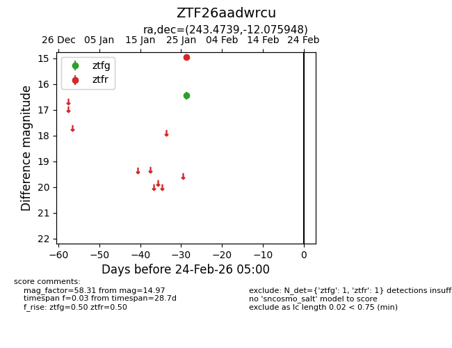
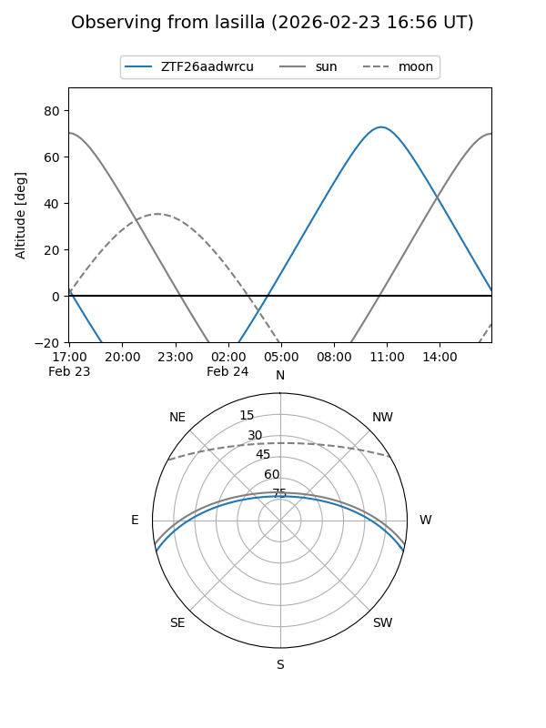
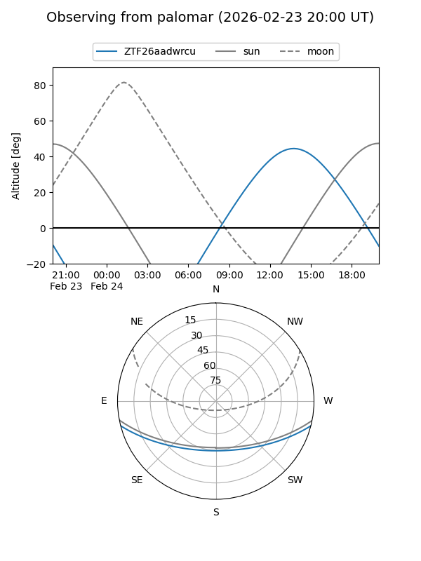

ZTF26aadwrcu
Target ZTF26aadwrcu at 2026-01-28 14:26
Aliases and brokers:
FINK: link
Lasair: link
ALeRCE: link
alt names
ZTF26aadwrcu (ztf,fink_ztf)
Coordinates:
equatorial (ra, dec) = 243.4739,-12.07595
equatorial (HMS+DMS) = 16:13:53.74,-12:04:33.41
galactic (l, b) = (1.1036,+27.18320)
Flags:
Photometry:
last ztfg=16.45, ztfr=14.97
1 ztfg, 1 ztfr detections
Lightcurve

Visibility


Additional plots